9.5 Bonding in Coordination Compounds
Werner was the first to describe the bonding features in coordination compounds. But his theory could not answer basic questions like:
(i) Why only certain elements possess the remarkable property of forming coordination compounds?
(ii) Why the bonds in coordination compounds have directional properties?
(iii) Why coordination compounds have characteristic magnetic and optical properties?
Many approaches have been put forth to explain the nature of bonding in coordination compounds viz. Valence Bond Theory (VBT), Crystal Field Theory (CFT), Ligand Field Theory (LFT) and Molecular Orbital Theory (MOT). We shall focus our attention on elementary treatment of the application of VBT and CFT to coordination compounds.
9.5.1 Valence Bond Theory
According to this theory, the metal atom or ion under the influence of ligands can use its (n-1)d, ns, np or ns, np, nd orbitals for hybridisation to yield a set of equivalent orbitals of definite geometry such as octahedral, tetrahedral, square planar and so on (Table 9.2). These hybridised orbitals are allowed to overlap with ligand orbitals that can donate electron pairs for bonding. This is illustrated by the following examples.
Table 9.2: Number of Orbitals and Types of Hybridisations
| Coordination number |
Type of hybridisation |
Distribution of hybrid orbitals in space |
| 4 | sp3 | Tetrahedral |
| 4 | dsp2 | Square planar |
| 5 | sp3d | Trigonal bipyramidal |
| 6 | sp3d2 | Octahedral |
| 6 | d2sp3 | Octahedral |
It is usually possible to predict the geometry of a complex from the knowledge of its magnetic behaviour on the basis of the valence bond theory.
In the diamagnetic octahedral complex, [Co(NH3)6]3+, the cobalt ion is in +3 oxidation state and has the electronic configuration 3d6. The hybridisation scheme is as shown in diagram.
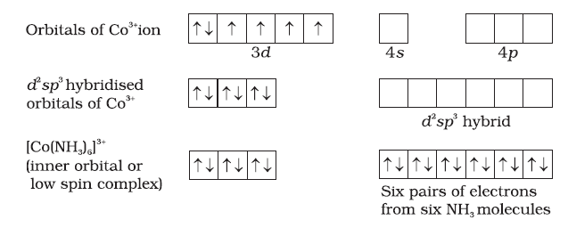
Six pairs of electrons, one from each NH3 molecule, occupy the six hybrid orbitals. Thus, the complex has octahedral geometry and is diamagnetic because of the absence of unpaired electron. In the formation of this complex, since the inner d orbital (3d) is used in hybridisation, the complex, [Co(NH3)6]3+ is called an inner orbital or low spin or spin paired complex. The paramagnetic octahedral complex, [CoF6]3– uses outer orbital (4d ) in hybridisation (sp3d2). It is thus called outer orbital or high spin or spin free complex. Thus:
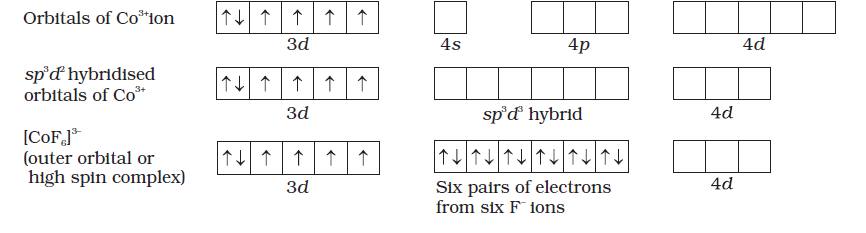
In tetrahedral complexes one s and three p orbitals are hybridised to form four equivalent orbitals oriented tetrahedrally. This is ill-ustrated below for [NiCL4]2-. Here nickel is in +2 oxidation state and the ion has the electronic configuration 3d8. The hybridisation scheme is as shown in diagram.
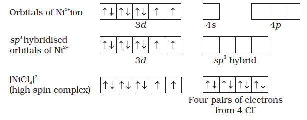
Each Cl– ion donates a pair of electrons. The compound is paramagnetic since it contains two unpaired electrons. Similarly, [Ni(CO)4] has tetrahedral geometry but is diamagnetic since nickel is in zero oxidation state and contains no unpaired electron.
In the square planar complexes, the hybridisation involved is dsp2. An example is [Ni(CN)4]2–. Here nickel is in +2 oxidation state and has the electronic configuration 3d8. The hybridisation scheme is as shown in diagram:
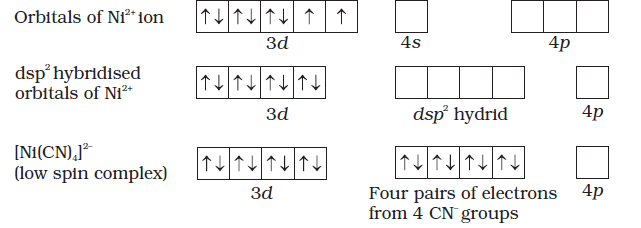
Each of the hybridised orbitals receives a pair of electrons from a cyanide ion. The compound is diamagnetic as evident from the absence of unpaired electron.
It is important to note that the hybrid orbitals do not actually exist. In fact, hybridisation is a mathematical manipulation of wave equation for the atomic orbitals involved.
9.5.2 Magnetic Properties of Coordination Compounds
The magnetic moment of coordination compounds can be measured by the magnetic susceptibility experiments. The results can be used to obtain information about the structures adopted by metal complexes.
A critical study of the magnetic data of coordination compounds of metals of the first transition series reveals some complications. For metal ions with upto three electrons in the d orbitals, like Ti3+ (d1); V3+ (d2); Cr3+ (d3); two vacant d orbitals are available for octahedral hybridisation with 4s and 4p orbitals. The magnetic behaviour of these free ions and their coordination entities is similar. When more than three 3d electrons are present, the required pair of 3d orbitals for octahedral hybridisation is not directly available (as a consequence of Hund’s rule). Thus, for d4 (Cr2+, Mn3+), d5 (Mn2+, Fe3+), d6 (Fe2+, Co3+) cases, a vacant pair of d orbitals results only by pairing of 3d electrons which leaves two, one and zero unpaired electrons, respectively.
The magnetic data agree with maximum spin pairing in many cases, especially with coordination compounds containing d6 ions. However, with species containing d4 and d5 ions there are complications. [Mn(CN)6]3– has magnetic moment of two unpaired electrons while [MnCl6]3– has a paramagnetic moment of four unpaired electrons. [Fe(CN)6]3– has magnetic moment of a single unpaired electron while [FeF6]3– has a paramagnetic moment of five unpaired electrons. [CoF6]3– is paramagnetic with four unpaired electrons while [Co(C2O4)3]3– is diamagnetic. This apparent anomaly is explained by valence bond theory in terms of formation of inner orbital and outer orbital coordination entities. [Mn(CN)6]3–, [Fe(CN)6]3– and [Co(C2O4)3]3– are inner orbital complexes involving d2sp3 hybridisation, the former two complexes are paramagnetic and the latter diamagnetic. On the other hand, [MnCl6]3–, [FeF6]3– and [CoF6-]3– are outer orbital complexes involving sp3d2 hybridisation and are paramagnetic corresponding to four, five and four unpaired electrons.
Example 9.7
The spin only magnetic moment of [MnBr4]2– is 5.9 BM. Predict the geometry of the complex ion ?
Solution
Since the coordination number of Mn2+ ion in the complex ion is 4, it will be either tetrahedral (sp3 hybridisation) or square planar (dsp2 hybridisation). But the fact that the magnetic moment of the complex ion is 5.9 BM, it should be tetrahedral in shape rather than square planar because of the presence of five unpaired electrons in the d orbitals.
9.5.3 Limitations of Valence Bond Theory
While the VB theory, to a larger extent, explains the formation, structures and magnetic behaviour of coordination compounds, it suffers from the following shortcomings:
(i) It involves a number of assumptions.
(ii) It does not give quantitative interpretation of magnetic data.
(iii) It does not explain the colour exhibited by coordination compounds.
(iv) It does not give a quantitative interpretation of the thermodynamic or kinetic stabilities of coordination compounds.
(v) It does not make exact predictions regarding the tetrahedral and square planar structures of 4-coordinate complexes.
(vi) It does not distinguish between weak and strong ligands.
9.5.4 Crystal Field Theory
The crystal field theory (CFT) is an electrostatic model which considers the metal-ligand bond to be ionic arising purely from electrostatic interactions between the metal ion and the ligand. Ligands are treated as point charges in case of anions or dipoles in case of neutral molecules. The five d orbitals in an isolated gaseous metal atom/ion have same energy, i.e., they are degenerate. This degeneracy is maintained if a spherically symmetrical field of negative charges surrounds the metal atom/ion. However, when this negative field is due to ligands (either anions or the negative ends of dipolar molecules like NH3 and H2O) in a complex, it becomes asymmetrical and the degeneracy of the d orbitals is lifted. It results in splitting of the d orbitals. The pattern of splitting depends upon the nature of the crystal field. Let us explain this splitting in different crystal fields.
(a) Crystal field splitting in octahedral coordination entities
In an octahedral coordination entity with six ligands surrounding the metal atom/ion, there will be repulsion between the electrons in metal d orbitals and the electrons (or negative charges) of the ligands. Such a repulsion is more when the metal d orbital is directed towards the ligand than when it is away from the ligand. Thus, the 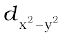 and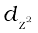 orbitals which point towards the axes along the direction of the ligand will experience more repulsion and will be raised in energy; and the dxy, dyz and dxz orbitals which are directed between the axes will be lowered in energy relative to the average energy in the spherical crystal field. Thus, the degeneracy of the d orbitals has been removed due to ligand electron-metal electron repulsions in the octahedral complex to yield three orbitals of lower energy, t2g set and two orbitals of higher energy, eg set. This splitting of the degenerate levels due to the presence of ligands in a definite geometry is termed as crystal field splitting and the energy separation is denoted by ∆o (the subscript o is for octahedral) (Fig.9.8). Thus, the energy of the two eg orbitals will increase by (3/5) ∆o and that of the three t2g will decrease by (2/5)∆o.
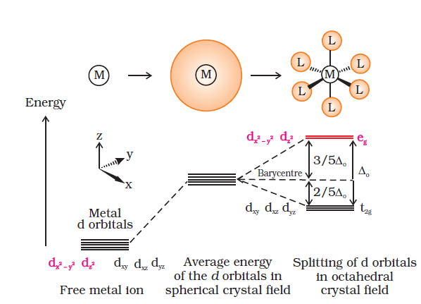
Fig.9.8: d orbital splitting in an octahedral crystal field
The crystal field splitting, ∆o, depends upon the field produced by the ligand and charge on the metal ion. Some ligands are able to produce strong fields in which case, the splitting will be large whereas others produce weak fields and consequently result in small splitting of d orbitals. In general, ligands can be arranged in a series in the order of increasing field strength as given below:
I– < Br– < SCN– < Cl– < S2– < F– < OH– < C2O42– < H2O < NCS–
< edta4– < NH3 < en < CN– < CO
Such a series is termed as spectrochemical series. It is an experimentally determined series based on the absorption of light by complexes with different ligands. Let us assign electrons in the d orbitals of metal ion in octahedral coordination entities. Obviously, the single d electron occupies one of the lower energy t2g orbitals. In d2 and d3 coordination entities, the d electrons occupy the t2g orbitals singly in accordance with the Hund’s rule. For d4 ions, two possible patterns of electron distribution arise: (i) the fourth electron could either enter the t2g level and pair with an existing electron, or (ii) it could avoid paying the price of the pairing energy by occupying the eg level. Which of these possibilities occurs, depends on the relative magnitude of the crystal field splitting, ∆o and the pairing energy, P (P represents the energy required for electron pairing in a single orbital). The two options are:
(i) If ∆o < P, the fourth electron enters one of the eg orbitals giving the configuration 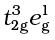. Ligands for which ∆o < P are known as weak field ligands and form high spin complexes.
(ii) If ∆o > P, it becomes more energetically favourable for the fourth electron to occupy a t2g orbital with configuration t2g4eg0. Ligands which produce this effect are known as strong field ligands and form low spin complexes.
Calculations show that d4 to d7 coordination entities are more stable for strong field as compared to weak field cases.
(b) Crystal field splitting in tetrahedral coordination entities
In tetrahedral coordination entity formation, the d orbital splitting (Fig. 9.9) is inverted and is smaller as compared to the octahedral field splitting. For the same metal, the same ligands and metal-ligand distances, it can be shown that ∆t = (4/9) ∆0. Consequently, the orbital splitting energies are not sufficiently large for forcing pairing and, therefore, low spin configurations are rarely observed.
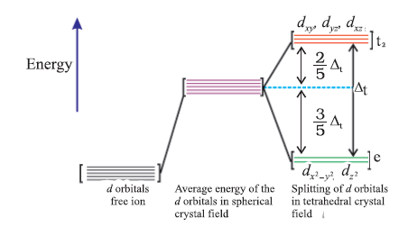
Fig.9.9: d orbital splitting in a tetrahedral crystal field.
9.5.5 Colour in Coordination Compounds
In the previous Unit, we learnt that one of the most distinctive properties of transition metal complexes is their wide range of colours. This means that some of the visible spectrum is being removed from white light as it passes through the sample, so the light that emerges is no longer white. The colour of the complex is complementary to that which is absorbed. The complementary colour is the colour generated from the wavelength left over; if green light is absorbed by the complex, it appears red. Table 9.3 gives the relationship of the different wavelength absorbed and the colour observed.
Table 9.3: Relationship between the Wavelength of Light absorbed and the Colour observed in some Coordination Entities
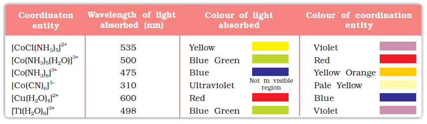
The colour in the coordination compounds can be readily explained in terms of the crystal field theory. Consider, for example, the complex [Ti(H2O)6]3+, which is violet in colour. This is an octahedral complex where the single electron (Ti3+ is a 3d1 system) in the metal d orbital is in the t2g level in the ground state of the complex. The next higher state available for the electron is the empty eg level. If light corresponding to the energy of blue-green region is absorbed by the complex, it would excite the electron from t2g level to the eg level (t2g1eg0 → t2g0eg1). Consequently, the complex appears violet in colour (Fig. 9.10). The crystal field theory attributes the colour of the coordination compounds to d-d transition of the electron.
It is important to note that in the absence of ligand, crystal field splitting does not occur and hence the substance is colourless. For example, removal of water from [Ti(H2O)6]Cl3 on heating renders it colourless. Similarly, anhydrous CuSO4 is white, but CuSO4.5H2O is blue in colour. The influence of the ligand on the colour of a complex may be illustrated by considering the [Ni(H2O)6]2+ complex, which forms when nickel(II) chloride is dissolved in water. If the didentate ligand, ethane-1,2-diamine(en) is progressively added in the molar ratios en:Ni, 1:1, 2:1, 3:1, the following series of reactions and their associated colour changes occur:
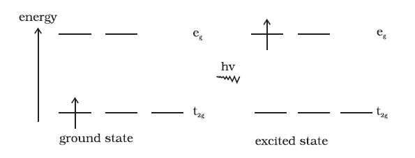
Fig.9.10: Transition of an electron in [Ti(H2O)6]3+
[Ni(H2O)6]2+ (aq) + en (aq) = [Ni(H2O)4(en)]2+(aq) + 2H2O
green pale blue
[Ni(H2O)4 (en)]2+(aq) + en (aq) = [Ni(H2O)2(en)2]2+(aq) + 2H2O
blue/purple
[Ni(H2O)2(en)2]2+(aq) + en (aq) = [Ni(en)3]2+(aq) + 2H2O
violet
This sequence is shown in Fig. 9.11.
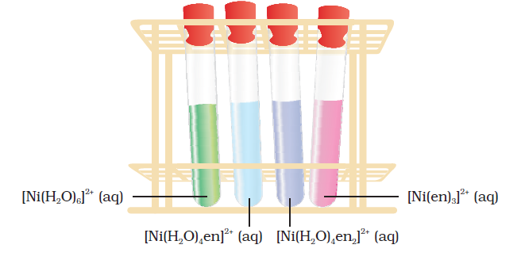
Fig.9.11 Aqueous solutions of complexes of nickel(II) with an increasing number of ethane-1, 2-diamine ligands
Colour of Some Gem Stones
The colours produced by electronic transitions within the d orbitals of a transition metal ion occur frequently in everyday life. Ruby [Fig.9.12(a)] is aluminium oxide (AL2O3) containing about 0.5-1% Cr3+ ions (d3), which are randomly distributed in positions normally occupied by Al3+. We may view these chromium(III) species as octahedral chromium(III) complexes incorporated into the alumina lattice; d–d transitions at these centres give rise to the colour.
In emerald [Fig.9.12(b)], Cr3+ ions occupy octahedral sites in the mineral beryl (Be3AL2Si6O18). The absorption bands seen in the ruby shift to longer wavelength, namely yellow-red and blue, causing emerald to transmit light in the green region.
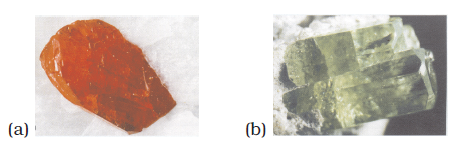
Fig.9.12: (a) Ruby: this gemstone was found in marble from Mogok, Myanmar; (b) Emerald: this gemstone was found in Muzo, Columbia.
9.5.6 Limitations of Crystal Field Theory
The crystal field model is successful in explaining the formation, structures, colour and magnetic properties of coordination compounds to a large extent. However, from the assumptions that the ligands are point charges, it follows that anionic ligands should exert the greatest splitting effect. The anionic ligands actually are found at the low end of the spectrochemical series. Further, it does not take into account the covalent character of bonding between the ligand and the central atom. These are some of the weaknesses of CFT, which are explained by ligand field theory (LFT) and molecular orbital theory which are beyond the scope of the present study.
Intext Questions
9.5 Explain on the basis of valence bond theory that [Ni(CN)4]2– ion with square planar structure is diamagnetic and the [NiCL4]2– ion with tetrahedral geometry is paramagnetic.
9.6 [NiCL4]2– is paramagnetic while [Ni(CO)4] is diamagnetic though both are tetrahedral. Why?
9.7 [Fe(H2O)6]3+ is strongly paramagnetic whereas [Fe(CN)6]3– is weakly paramagnetic. Explain.
9.8 Explain [Co(NH3)6]3+ is an inner orbital complex whereas [Ni(NH3)6]2+ is an outer orbital complex.
9.9 Predict the number of unpaired electrons in the square planar [Pt(CN)4]2– ion.
9.10 The hexaquo manganese(II) ion contains five unpaired electrons, while the hexacyanoion contains only one unpaired electron. Explain using Crystal
Field Theory.